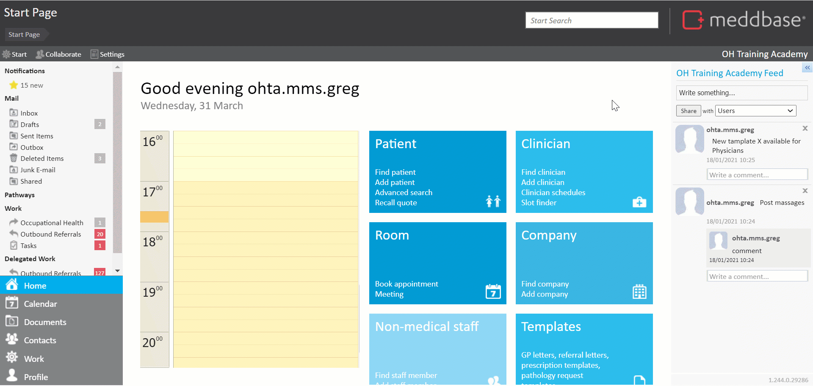
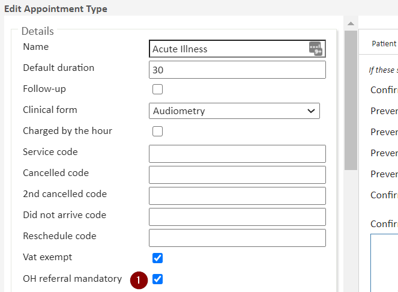
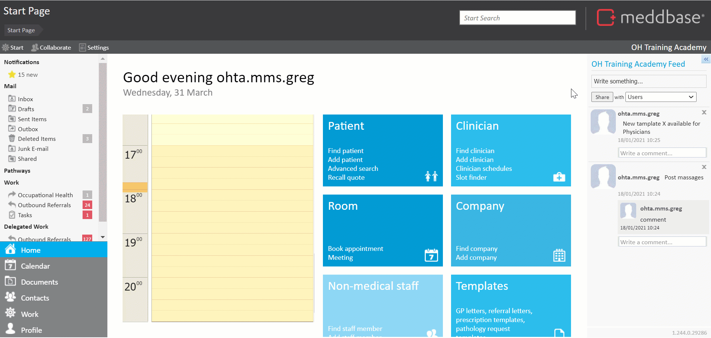

When managers initiate a new referral from the Occupational Health Portal, they are asked to select a Case Title from a list that can be configured in Meddbase. The Case Titles are often configured as a list of 'reasons for referral', or another piece of identifying information for a case.
Once assigned, the Case becomes the home for all related referrals, appointments, documentation and SLA tracking.
This article will walk you through the administration of Case Titles and the resulting impact on the Case Management workflow. The aspects discussed here are:
The list of case titles managers can choose from on the Referral Portal is configured as follows:
The value entered in the Safe Name field is what the manager will see on the Referral Portal.
Remember to 'Save' your settings.
Meddbase system administrators can determine whether or not Managers using the Referral Portal can affect the status of a case, i.e. closing an open case or re-opening a closed one.
To access this setting:
This setting is set to true/enabled by default.
Meddbase allows users to extract information about Cases into Templates, using Template Code, and by means of the Report Query Builder and selecting the Cases Root Table.
Click here for a detailed article on Case-related Template Code and Reporting on Cases.
When dealing with an Incoming OH Referral sent from the Referral Portal, the Collaboration view (visible both before and after accepting referrals) allows users to review the referral, including any related documents.
As part of the collaboration view, users will be able to see the case to which the referral is assigned, and will be able to pick a different existing case*.
Re-assigning a referral or assigning a booking to a pre-existing case or creating a New Case requires Pre-arrival Cases feature to be switched on. Click here for a detailed article

As part of creating an occupational health referral on behalf of a manager, the user is asked to choose a new or existing case to which to assign the referral.
When booking an appointment with the OH Referral Mandatory setting set to true (1), users will be prompted to select a new or existing case to which the new referral needs to be assigned. This is required to enable the user to proceed with the appointment booking.

